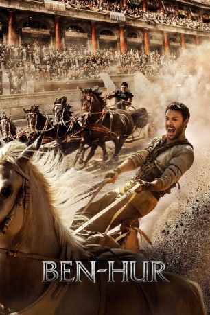

gesehen am 02.12.2016
gesehen am 02.12.2016Alternativ: Ben-Hur gesehen am 02.12.2016
 
 IMDB-Wertung: 5.7 / 10
IMDB-Wertung: 5.7 / 10  Metascore:
Metascore: 
Der jüdische Prinz Judah Ben-Hur (Jack Huston) und der Sohn eines römischen Steuereintreibers Messala (Toby Kebbell), Sohn eines römischen Steuereintreibers, wachsen gemeinsam zu jener Zeit auf, zu der auch Jesus Christus (Rodrigo Santoro) lebt. Sie sind beste Freunde, bis Messala eines Tages nach Rom geht, um sich dort weiterzubilden. Jahre später kommt er als völlig veränderter Mensch zurück, hat nur noch Spott für Judah und vor allem für dessen Religion übrig. Schon bald intrigiert er gegen seinen einstigen Freund und sorgt dafür, dass dessen Familie im Gefängnis landet und Judah auf ein Sklavenschiff gebracht wird. Der dort dem sicheren Tod geweihte Ben-Hur überlebt wie durch ein Wunder und kennt nur noch ein Ziel: Rache. Die bietet sich schließlich bei einem Wagenrennen in Rom, an welchem Ben-Hur im Dienste des ihm wohlgesonnenen Scheichs Ilderim (Morgan Freeman) teilnimmt...
Jahr: 2016
Dauer: 123 Minuten
FSK: 12
Land: USA Studio: Paramount PicturesTonspuren: DD5.1 - ,
Untertitel: Deutsch,
Auflösung: 1080p (1920x800) Größe: 6563 MB
Genre: Action, Drama, Abenteuer, Weihnachten
Regisseur: Timur Bekmambetov
Drehbuch: Brian Sawyer
Soundtrack:
Darsteller:
 Jack Huston als Judah Ben-Hur
Jack Huston als Judah Ben-Hur Toby Kebbell als Messala Severus
Toby Kebbell als Messala Severus Rodrigo Santoro als Jesus
Rodrigo Santoro als Jesus Nazanin Boniadi als Esther
Nazanin Boniadi als Esther Ayelet Zurer als Naomi Ben-Hur
Ayelet Zurer als Naomi Ben-Hur Pilou Asbæk als Pontius Pilate
Pilou Asbæk als Pontius Pilate Morgan Freeman als Ilderim
Morgan Freeman als Ilderim Marwan Kenzari als Druses
Marwan Kenzari als Druses Moises Arias als Dismas
Moises Arias als Dismas James Cosmo als Quintus
James Cosmo als Quintus Haluk Bilginer als Simonides
Haluk Bilginer als Simonides Yasen Atour als Jacob
Yasen Atour als Jacob Jarreth J. Merz als Flores
Jarreth J. Merz als Flores Simone Spinazze als Garrison Captain
Simone Spinazze als Garrison Captain Jay Natelle als Gesius
Jay Natelle als Gesius Alessandro Giuggioli als Judas
Alessandro Giuggioli als JudasDatei: X:\2016(A-F)\Ben Hur (2016, FSK12, 1920x800).mkv seit 01.12.2016
Festplatte: HD 2016(A-Z)
 Es gibt insgesamt 147 Filme in der Gruppe '2016(A-F)'
Es gibt insgesamt 147 Filme in der Gruppe '2016(A-F)'